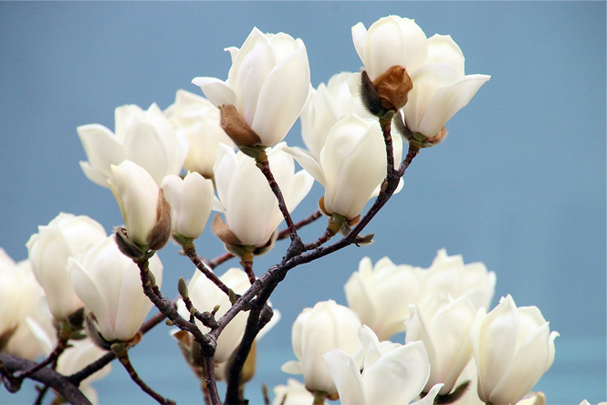
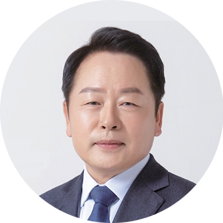

국립공주대학교
국립 공주대학교는 1984년 공주사범대학으로 출발하여 1991년에 충남 유일의 종합국립대학교로 승격되었습니다.
국립 공주대학교는 진리탐구,가치창조,정의실천이라는 교육이념 아래 교육환경의 빠른
변화의 발 빠르게 대응하며 인성은 물론 창의성과 문제해결 능력을 키울수 있는 교육과정
혁신을 통해 학생중심의 경쟁력있는 대학 만들기의 최선을 다하고 있습니다.
[2024 기록] 공주대 2024학년도 신입생 충원률100% 2023 교육부 고교교육 기여대학 지원사업 선정(16년 연속)..
2023년도 국립대학육성사업비 147.7억 2024년도 교원임용고시 합격자 305명 학생1인당 장학금 279만원 등등
여러 기록들을 세우고있다
대학소개
- 학교연혁
- 2020.01.01:터키 Istanbul Kultur University 학술교류협정 체결
- 2020.01.02:시무식
- 2020.01.17:필리핀 Tarlac State University 학술교류협정 체결
- 2020.02.25:2019학년도 전기 학위수여식(박사82명,석사361명,학사3190명)
- 2020.05.22:일본 Chiba University 환경건강필드과학센터와 산업과학대학 학술교류협정 체결
- 2020.05.28:2020년 고교교육 기여대학 지원사업 선정(13년 연속 선정)....
- 비전
- 교육목표
- 학교상징물
- 은행나무
- 백목련

- 곰

- 조직기구표
- 총장
- 학무회의
- 대학평의원회
- 교수회의
- 기관생명위원회
- 조정위원회
- 동물실험윤리위원회
제8대 국립공주대학교 총장

인적사항
| 이름 |
임경호 |
출생 |
1964년4월20일 |
| 성별 |
남 |
나이 |
59세 |
| 재임기간 |
2023년 6월 5일 ~ 2027년 6월 4일 |
- 학력
- 서울시립대학교(환경공학/학사)
- 한국과학기술원(토목공학/석사)
- 한국과학기술원(토목공학/박사)
- 경력
- 국립공주대학교 스마트인프라공학과 교수
- kyoto University 방문교수
- 한국도시환경학회 편집위원장
- 대한환경공학회 대전.세종.충청지회 회장
- 공주대학교 방재연구센터 소장
색상추가
| 재임기간 |
이름 |
성별 |
| 2023 ~ 2027 |
임경호 |
남 |
국립공주대 제1~3대 총장
| 이름 |
안승주 |
| 성별 |
남 |
임기 |
1991~1995 |
| 이름 |
이상우 |
| 성별 |
남 |
임기 |
1995~1998 |
| 이름 |
오제직 |
| 성별 |
남 |
임기 |
1998~2002 |